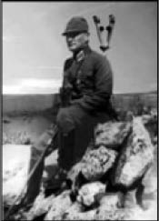

LXXIII
Başkanlık kürsüsünden Meclis’teki kargaşayı seyrettiği gibi ülkedeki kargaşayı seyreden Mustafa Kemal, bu deneme için zamanın henüz erken olduğunu görmüştü. Halk, henüz hazır değildi.
“Başöğretmen”, anlamsız öndeyişlerde bulunan Kâhin, Ankara ve Yalova’da pahalı hobilerle vakit geçiren, Boğaziçi’nde yakın dostları ve sıradan kadınlarla içki içip oyun oynayan adam ortadan kayboluverdi.
Diktatör, güçlü pençesini çıkardı ve bir kere daha tüm ülkeyi kıskıvrak yakaladı. Bozkurt dişlerini göstermişti. Vahşi, acımasız bir toprakta, vahşi, ilkel bir halkın yöneticisiydi. Güçlü ve vahşi olmalıydı.
Sıkıyönetim ilan etti, basın eserindeki sansürü yeniden yürürlüğe koydu ve konuşma özgürlüğünün bütün kapılarını kapattı. Hükümeti eleştiren tüm gazetelerin editörlerini şiddetle cezalandırdı.

Mustafa Kemal
İsmet’le arasıdaki anlaşmazlığa son verdi. Bu acımasız, sert küçük adama, katı kurmay subaya, buyurgan amire ihtiyacı vardı.
Türk birliklerine Kürtlerin zalimce ezilmesi emrini gönderdi; liderlerini asacak ve hapse atacak, geri kalanını da bölge dışına süreceklerdi. Güneydeki ayaklanmayı ezdi ve yakalanabilen bütün Ermenileri sürdü. İzmir’deki asileri cezalandırdı ve komünistleri yok etti. Ona suikast planlayan kişileri Haliç’in üzerindeki Galata Köprüsü’nde astırdı.
Menemen’e askeri birlikler gönderdi. Askerler binlerce Türk’ü yakaladılar ve alelacele kurulmuş sıkıyönetim mahkemeleri, asilerin elebaşlarından yirmi sekizini, Şeyh Mehmet’in Kubilay’ı öldürüşüne denk bir vahşilikle astı ve kalanlarını da hapse attı.
Sınırlar temizlendi, ayaklamalar bastırıldı. Şikâyet kükreyişi birdenbire kesildi. Halk, ordu, polis, jandarma, memurlar her sınıftan bütün kadınlar ve erkekler efendilerinin kim olduğunu anladılar. Sükûnet ve emniyet gibi, idareyi ele alan güçlü adam hakkındaki eski kör iman da bir kez daha kendini gösterdi.